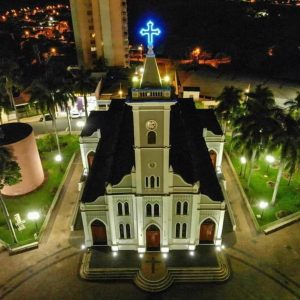
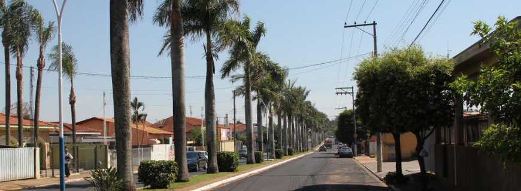
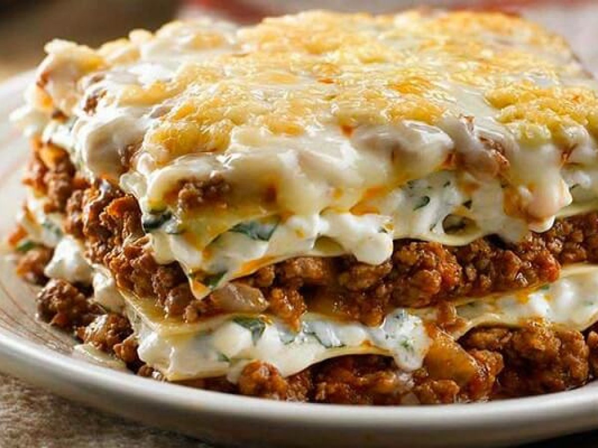
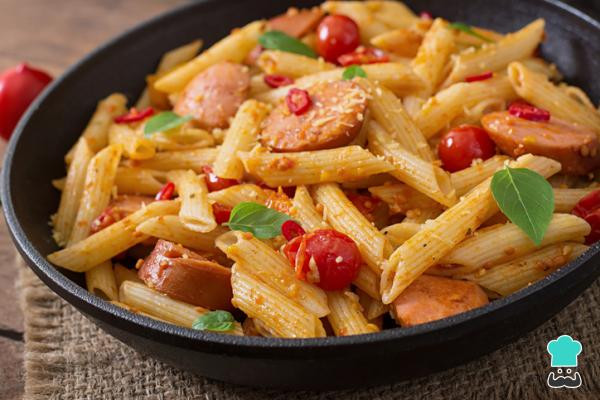
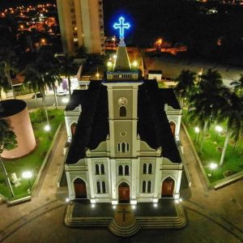
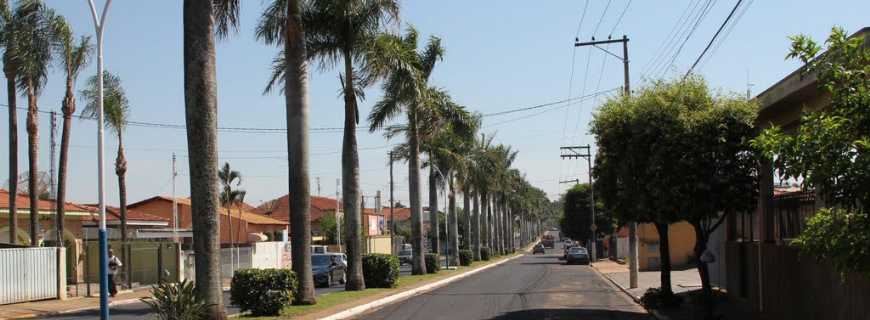
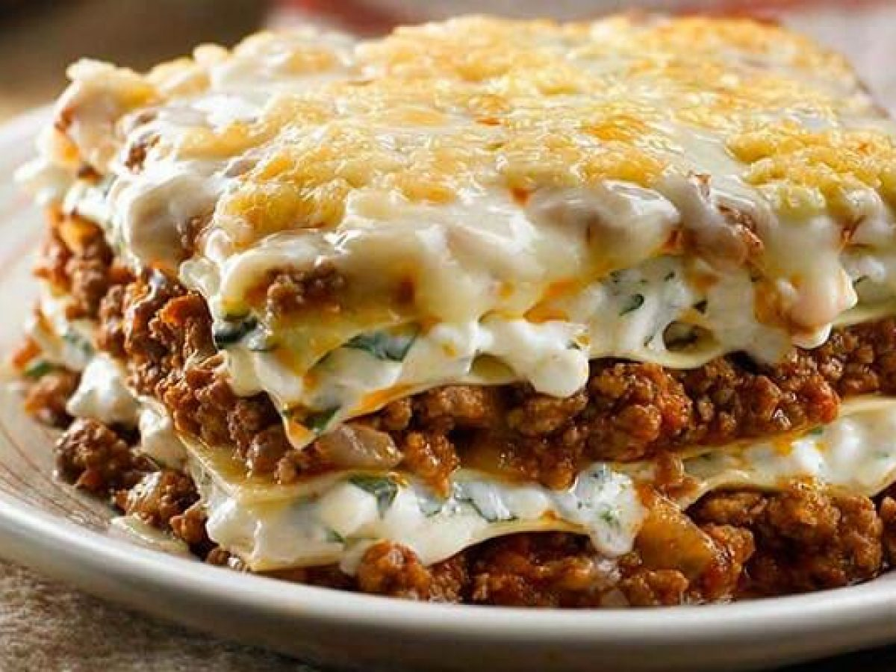
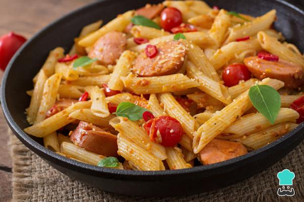

Minha vidinha
Nasci em Monte Azul Paulista em 2007, onde tem uma igreja bonita e muitas farmácias.
 Gosto de assistir Harry Potter e Crepúsculo.
Minhas comidas favoritas são: Lasanha e Macarrão.
 Nasci em Monte Azul Paulista em 2007, onde tem uma igreja bonita e muitas farmácias.
 Gosto de assistir Harry Potter e Crepúsculo.
Minhas comidas favoritas são: Lasanha e Macarrão.
 